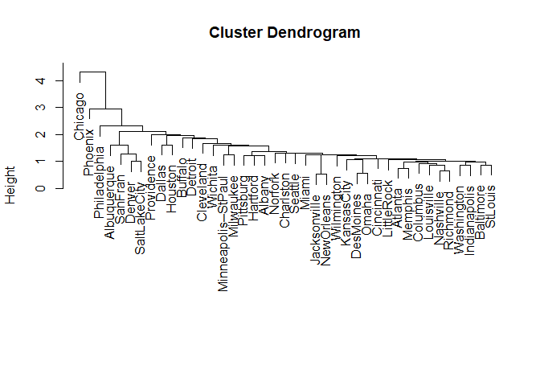
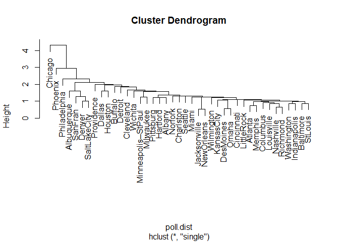

and data mining for grouping data into 'clusters' that exposes similarities or dissimilarities in the data. There are many approaches to hierarchical clustering as it is not possible to investigate all clustering possibilities. One set of approaches to hierarchical clustering is known as agglomerative, whereby in each step of the clustering process an observation or cluster is merged into another cluster.
Hierarchical clustering is a widely used and popular tool in statistics and data mining for grouping data into 'clusters' that exposes similarities or dissimilarities in the data. There are many approaches to hierarchical clustering as it is not possible to investigate all clustering possibilities. One set of approaches to hierarchical clustering is known as agglomerative, whereby in each step of the clustering process an observation or cluster is merged into another cluster. The first approach we will explore is known as the single linkage method, also known as nearest neighbors.
The data we will cluster is seven different measures of air pollution of 41 cities throughout the United States (qtd. Rencher 502). The data were obtained from the companion FTP site of the book Methods of Multivariate Analysis and contains the variables as follows:
- SO2 content of air in mg/cm
- Average annual temperature in F
- Number of manufacturing plants with 20 or more workers
- Population size as recorded by 1970 census in thousands
- Average annual wind speed in mph
- Average annual precipitation in inches
- Average number of days with precipitation per year
poll <- read.table('T15_13_POLLUTION.dat', col.names = c('city', 'so2', 'tempf', 'manufacturing',
'pop', 'wind', 'precip', 'days.w.precip'))
Variable Scaling Consideration
Although recommended by many authors, the question of scaling in the context of hierarchical clustering (particularly using the Euclidean distance measure) is not so black and white (Rencher 2002, pp. 454). The variables that best separate clusters might not do so after scaling. We will scale the pollution data because the variables' scale of measurement is quite different from each other, but it should be noted standardization should be thoughtfully applied (or not applied) rather than proceeding to scale automatically.
poll.scale <- data.frame(scale(poll[,2:8]))
Measures of Similarity (or Dissimilarity) for Cluster Analysis
Before performing hierarchical clustering, we must find the similarity between each pair of observations, which is referred to as the distance. The distance measure is more of a measure of dissimilarity as it increases as the observations move farther away. As in agglomerative hierarchical clustering, there are many approaches to measuring the distance, the most common of which is the Euclidean distance. There is no 'best' distance measure, and one must consider the data at hand and the assumptions of each measure to select an appropriate method. Euclidean distance is the straight line between two pairs of observations and is defined as:
The following function implements the Euclidean distance calculations for each pair of observations in the dataset.
euclidean.distance <- function(x) {
n <- nrow(x)
dist.mat <- matrix(0, n, n)
xj <- x[1,]
for (i in 1:n) {
for (j in 1:n) {
yj <- x[j,]
d <- sqrt(as.matrix(xj - yj) %*% as.matrix(t(xj - yj)))
dist.mat[j,i] <- d
}
xj <- x[1+i,]
}
return(dist.mat)
}
euclid.dist <- euclidean.distance(poll.scale)
The dist() function in R also calculates the distance.
poll.dist <- dist(poll.scale, method = 'euclidean')
The output of the dist() function is an atomic vector. We convert it
to a matrix here to compare our results with the function.
poll.dist.mat <- as.matrix(poll.dist)
As the resulting matrices are \(41 \times 41\), check the first and bottom three rows of each to verify.
cbind(head(poll.dist.mat[,1:3]), tail(poll.dist.mat[,1:3]))
## 1 2 3 1 2 3
## 1 0.000000 4.789018 3.171606 4.034076 3.264390 1.782405
## 2 4.789018 0.000000 3.009865 5.751432 2.007170 3.321471
## 3 3.171606 3.009865 0.000000 4.790368 1.171199 2.906303
## 4 3.871066 3.491389 1.262450 6.637764 3.208636 4.153093
## 5 6.230609 2.817075 3.800426 5.675892 2.526646 4.136598
## 6 5.305038 1.729939 2.964289 6.546541 4.008765 3.474188
cbind(head(euclid.dist[,1:3]), tail(euclid.dist[,1:3]))
## [,1] [,2] [,3] [,4] [,5] [,6]
## [36,] 0.000000 4.789018 3.171606 4.034076 3.264390 1.782405
## [37,] 4.789018 0.000000 3.009865 5.751432 2.007170 3.321471
## [38,] 3.171606 3.009865 0.000000 4.790368 1.171199 2.906303
## [39,] 3.871066 3.491389 1.262450 6.637764 3.208636 4.153093
## [40,] 6.230609 2.817075 3.800426 5.675892 2.526646 4.136598
## [41,] 5.305038 1.729939 2.964289 6.546541 4.008765 3.474188
Hierarchical Clustering with Single Linkage
Johnson's algorithm describes the general process of hierarchical clustering given \(N\) observations to be clustered and an \(N \times N\) distance matrix. The steps of Johnson's algorithm as applied to hierarchical clustering is as follows:
- Begin with disjoint clustering with level \(L(0) = 0\) and \(m = 0\).
-
In the case of single linkage, find the pair with the minimum distance, with pairs denoted as \(r\) and \(s\), according to:
-
\(d[(r), (s)] = min (d[(i),(j)])\)
-
Add one to \(m\), \(m = m + 1\). Merge clusters \(r\) and \(s\) into one cluster to form the next clustering at \(m\). \(L(m)\) then becomes: \(L(m) = d[(r), (s)]\)
-
The distance matrix is updated by removing the rows and columns corresponding to clusters \(r\) and \(s\) and inserting a row and column for the newly formed cluster. The distance between the newly formed cluster \((r,s)\) and the old cluster \(k\) is calculated again with the minimum distance (in the case of single linkage):
-
\(d[(k), (r,s)] = min (d[(k),(r)], d[(k),(s)])\)
-
Stop if all \(N\) observations are in one cluster, otherwise repeat starting at Step 2.
Implementing the Single Linkage Hierarchical Clustering Technique
Although hierarchical clustering with a variety of different methods can
be performed in R with the hclust() function, we can also replicate
the routine to an extent to better understand how Johnson's algorithm is
applied to hierarchical clustering and how hclust() works. To plot our
clustering results, we will rely on one output of the hclust()
function, the order value, which is purely used for plotting. To plot
and compare our clustering results, the best method (that I know of) is
to create an hclust object, which according to ?hclust, requires
merge, height and the aforementioned order components.
Quoting from the hclust documentation of the required components:
merge is an n-1 by 2 matrix. Row i of merge describes the merging of clusters at step i of the clustering. If an element j in the row is negative, then observation -j was merged at this stage. If j is > positive then the merge was with the cluster formed at the (earlier) stage j of the algorithm. Thus negative entries in merge indicate agglomerations of singletons, and positive entries indicate agglomerations of non-singletons.
height is a set of n-1 real values (non-decreasing for ultrametric trees). The clustering height: that is, the value of the criterion associated with the clustering method for the particular agglomeration.
Order is a vector giving the permutation of the original observations suitable for plotting, in the sense > that a cluster plot using this ordering and matrix merge will not have crossings of the branches.
Therefore we need to build the merge and height objects. We will
only use the order output of hclust() to plot.
To start, initialize the merge and height objects and set the
diagonal of the distance matrix to Inf to avoid including 0s in our
calculations.
Lm <- data.frame(euclid.dist)
N <- nrow(Lm)
merge <- matrix(0, N-1, 2)
height <- vector(length = N-1)
diag(Lm) <- Inf
The row and column names of the distance matrix are set to \(-1\) increasing up to \(-N\), which allows us to note if the merged cluster at a particular step was an individual cluster.
colnames(Lm) <- -(1:N)
rownames(Lm) <- -(1:N)
The following loop builds the merge and height objects needed for
plotting the hierarchical clustering results. A visual example of how
clustering is
performed
shows how the rows and columns are merged with a simple dataset.
for (m in 1:(N-1)) {
cols <- colnames(Lm)
# Johnson's algorithm Step 2L Find the pair with the minimum distance
# The which() function returns the row and column position of the pair
d <- which(Lm == min(Lm), arr.ind = TRUE)[1,,drop=FALSE]
height[m] <- min(Lm) # The height is the value of the pair with the minimum distance
# The row and column position of the minimum pair is stored as sequence m in the merge object
merge[m,] <- as.numeric(cols[d])
# Johnson's algorithm Step 3: The pair with the minimum distance is merged
# The cluster object is used to find previous clusters that the pair belong to (if they exist)
# Does this by finding any columns above 0 (since all column names are negative, a positive
# column value implies it has been clustered)
cluster <- c(d, which(cols %in% cols[d[1, cols[d] > 0]]))
colnames(Lm)[cluster] <- m # Rename the columns indicated by cluster to the sequence number, m
# Merge the pairs according to Johnson's algorithm and the single linkage method
sl <- apply(Lm[d,], 2, min)
# Johnson's algorithm Step 4: Remove column and row corresponding to old clusters and
# insert a new column and row for newly formed cluster.
# The insertion of the cluster is done by setting the first sequential row and column of the
# minimum pair in the distance matrix (top to bottom, left to right) as the cluster resulting
# from the single linkage step
Lm[min(d),] <- sl
Lm[,min(d)] <- sl
# Make sure the minimum distance pair is not used again by setting it to Inf
Lm[min(d), min(d)] <- Inf
# The removal step is done by setting the second sequential row and column of the minimum pair
# (farthest right, farthest down) to Inf
Lm[max(d),] <- Inf
Lm[,max(d)] <- Inf
}
Plotting the Hierarchical Clustering as a Dendrogram
We now have the merge and height components of an hclust object.
The order component comes from the hclust() function. As noted, the
order component is used just by hclust to plot and has no bearing on
our understanding of cluster analysis.
poll.clust <- hclust(poll.dist, method = 'single')
According to the documentation in ?hclust, an hclust object is a list
with class hclust of the above components. We construct the hclust class
with the following:
hclust.obj <- list() # Initialize an empty list
hclust.obj$merge <- merge # Add the merge component obtained earlier
hclust.obj$order <- poll.clust$order # Here the order component from hclust is added to the list
hclust.obj$height <- height # The height component determines the lengths of the dendogram nodes
hclust.obj$labels <- poll$city # Add the city names to the labels component
class(hclust.obj) <- 'hclust' # The list is set to class hclust
plot(hclust.obj)

Plot the hierarchical clustering as given by the hclust() function to
verify our results.
plot(poll.clust, labels = poll$city)

Interpretation of the Cluster Plot
Moving left to the right along the x-axis, we see there Chicago, Phoenix, and Philadelphia are separated from other cities to a decreasing degree. Otherwise, there isn't too much distinction between clusters. At the height of slightly more than two we have a three cluster solution (counting the number of lines crossed going left to right on the x-axis), but the third cluster would contain the bulk of the cities and thus isn't particularly useful. Using a lower height increases the number of clusters significantly, for example, a height of about 1.9 gives a six-cluster solution. However, the final cluster still contains a large amount of the cities and therefore isn't very descriptive of how the cities group themselves. This lack of separation in the clusters might indicate there isn't too much variation in the cities' pollution levels to begin with, the method of clustering used, or a combination of the two. The former point is further evidenced by small distances in the y-axis between many of the clusters.
We will see in later posts if using a different distance measure or clustering method improves the clustering of the cities. The hierarchical cluster could be 'cut' to the number of groups we are interested in, but since the clustering isn't that great, we will save this step once for when a better clustering and distance method are used.
Disadvantages of the Single Linkage Approach
The single linkage (nearest neighbors) approach has several disadvantages compared to other clustering methods and is therefore not recommended by many authors (Rencher, 2002, pp. 475). Single linkage is rather prone to chaining (also known as space-contracting), which is the tendency for newly formed clusters to move closer to individual observations, so observations end up joining other clusters rather than another individual observation. We can see this markedly in the hierarchical cluster plot above. The single linkage method is also sensitive to errors in distances between observations.
It should be noted there is no clear 'best' clustering method and often a good approach is to try several different methods. If the resulting clusters are somewhat similar, that is evidence there may be natural clusters in the data. Many studies, however, conclude Ward's method and the average linkage method are the overall best performers (Rencher, 2002, pp. 479).
References
Murtagh, F. (n.d.). Multivariate Data Analysis with Fortran C and Java. Queenâs University Belfast.
Rencher, A. C. (2002). Methods of multivariate analysis. New York: J. Wiley.
http://84.89.132.1/~michael/stanford/maeb7.pdf
http://www.stat.berkeley.edu/~spector/s133/Clus.html
http://www.pbarrett.net/techpapers/euclid.pdf
Related Posts
- Tukey's Test for Post-Hoc Analysis
- Kruskal-Wallis One-Way Analysis of Variance of Ranks
- Calculating and Performing One-way Multivariate Analysis of Variance (MANOVA)
- Calculating and Performing One-way Analysis of Variance (ANOVA)
- Computing Working-Hotelling and Bonferroni Simultaneous Confidence Intervals